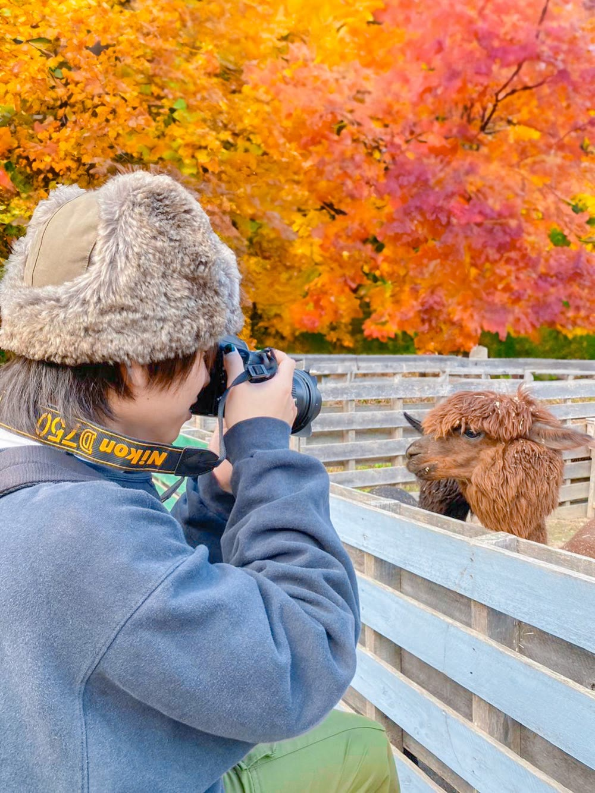
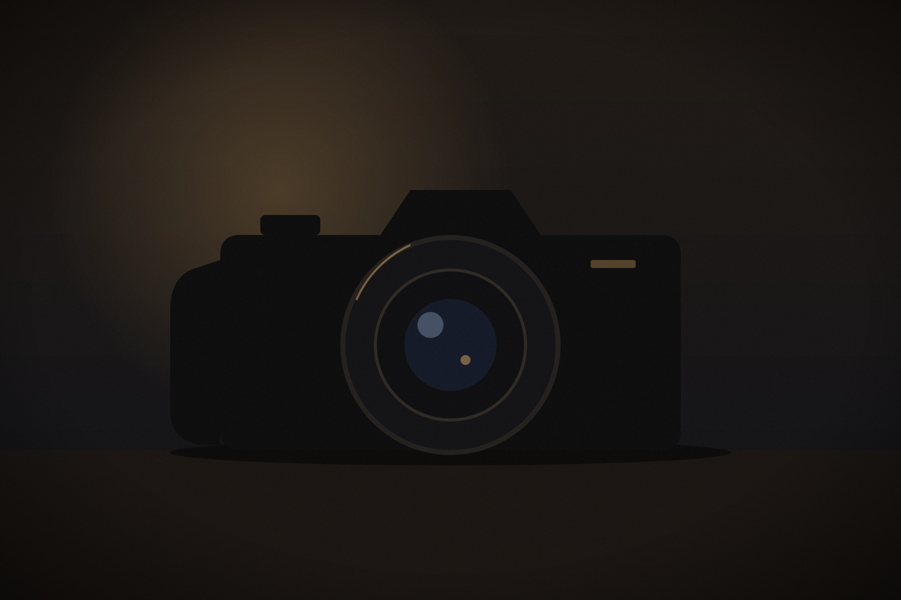

01 — About
りゅーについて
写真とことばで伝える仕事をしながら、
常に楽しそうなことを考えて生きてるドパガキ。
趣味は写真と株式投資とたまにバイク

Profile
りゅー
広報 ／ 写真 ／ ファッションライダー
愛媛県松山市出身、25歳。地元企業でしがない広報担当をしています。
文字と写真で「どう伝えるか」を日々考えています。感性を磨くために修行中です。
「りゅーのあとりえ」は、私が見た世界のごく一部を置いておくための場所です。
- 出身
- 愛媛県松山市
- 年齢
- 25歳
- お仕事
- 地元企業の広報
- 愛車 / 愛機
- Rebel 250 / D750
History
これまでの道のり
-
愛媛県松山市に生まれる
田畑しかない街で育つ。稲・ブタクサアレルギー持ち。
-
松山大学を卒業、Webマーケティングの会社に入社
コンサルタントとして、企業の集客や発信を支援。
ガチで向いてなかった。地獄みたいな1年を過ごす。 -
転職し、地元企業の広報に
写真と自分の拙い言葉とで情報を発信。
適材適所ってあるんやなぁ。 -
「童心会」を設立
大人が本気で子どもに還る場所として童心会を立ち上げました。
Partners
Tool
My Bike
Honda Rebel 250
- 排気量
- 249cc 水冷単気筒
- 年式
- 2021年式
- カラー
- マットジーンズブルーメタリック
冬は寒くて夏は暑いので、春と秋にしか乗る気になりません。
腰痛持ちなので、ロンツーは嫌いです。
My Camera
Nikon D750
- 種類
- 35mmフルサイズ デジタル一眼レフ
- よく使うレンズ
- AF-S NIKKOR 50mm f/1.8G
そろそろミラーレスに乗り換えたい。
Z8欲しい。誰か買ってくれ。

Follow
SNS
日々の写真や活動の近況はこちらで発信しています。お気軽にフォロー・DMどうぞ。